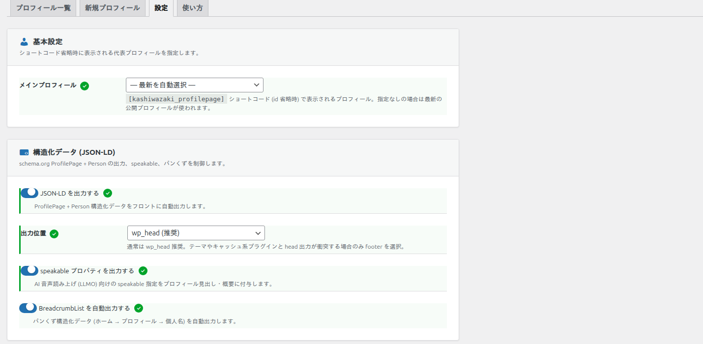
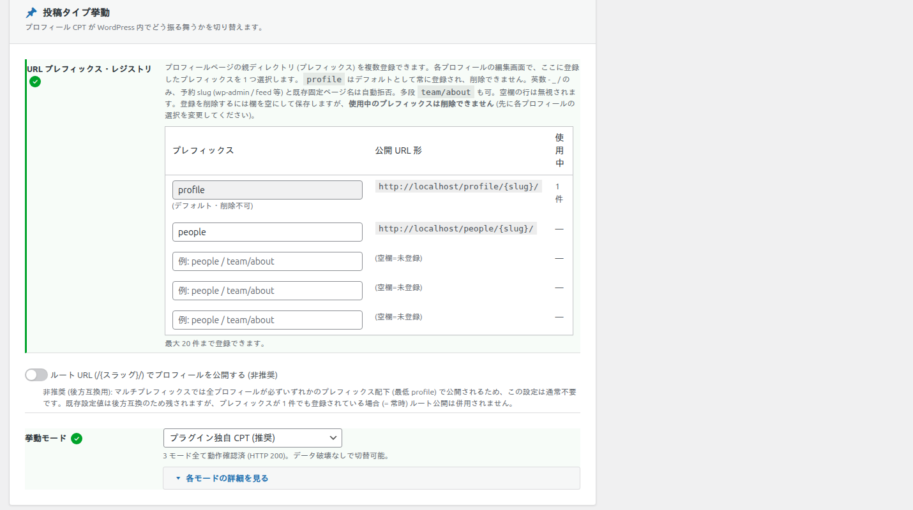

設定（全オプション）
「設定」タブは 基本設定 / 構造化データ (JSON-LD) / 投稿タイプ挙動 / 表示オプション の 4 つのカードで構成されています。このページではすべてのオプションを初期値つきで解説します。この画面の変更には管理者権限 (manage_options) が必要です。
1. 基本設定
ショートコードを ID 省略で使ったときに表示される「代表プロフィール」を指定します。
| オプション | 形式 | 初期値 | 説明 |
|---|---|---|---|
| メインプロフィール | 選択 | 最新を自動選択 | [kashiwazaki_profilepage] を ID 省略で使ったときに表示されるプロフィール。未指定なら最新の公開プロフィールが使われます。 |
2. 構造化データ (JSON-LD)
schema.org の ProfilePage + Person の出力、speakable、パンくずを制御します。出力される型の詳細は「構造化データ (JSON-LD)」を参照してください。

| オプション | 形式 | 初期値 | 説明 |
|---|---|---|---|
| JSON-LD を出力する | チェック | ON | ProfilePage + Person 構造化データをフロントに自動出力します。OFF で SEO 機能を完全に止められます。 |
| 出力位置 | 選択 (wp_head / wp_footer) | wp_head (推奨) | 通常は wp_head。テーマやキャッシュ系プラグインと head 出力が衝突する場合のみ wp_footer を選びます。 |
| speakable プロパティを出力する | チェック | ON | AI 音声読み上げ (LLMO) 向けの speakable 指定を、プロフィールの見出し・概要に付与します。 |
| BreadcrumbList を自動出力する | チェック | ON | パンくず構造化データ (ホーム → プロフィール → 個人名) を自動出力します。 |
3. 投稿タイプ挙動
プロフィール投稿タイプが WordPress 内でどう振る舞うか、および公開 URL の構造を設定します。
URL プレフィックス・レジストリ
プロフィールページの親ディレクトリ (プレフィックス) を複数登録できます。各プロフィールの編集画面で、ここに登録したプレフィックスを 1 つ選択します。

profileはデフォルトとして常に登録され、削除できません。- 使える文字は英数・
-・_・/。team/aboutのような多段プレフィックスも可能です。 - 予約 slug (
wp-admin/feed等) や既存の固定ページ名は自動的に拒否されます。 - 公開 URL は
http://example.com/{プレフィックス}/{スラッグ}/の形になります。 - 最大 20 件まで登録できます。空欄の行は未登録として無視されます。
- 使用中のプレフィックスは削除できません。 先に各プロフィールの選択を変更してください。
- プレフィックスを変更しても、旧 URL から新 URL へ 301 リダイレクトされ、SEO 評価が引き継がれます。
| オプション | 形式 | 初期値 | 説明 |
|---|---|---|---|
| URL プレフィックス・レジストリ | テキスト (複数行) | profile | 上記参照。最大 20 件。 |
| ルート URL (/{スラッグ}/) で公開する | チェック | OFF (非推奨) | 後方互換用。プレフィックスが 1 件でも登録されていれば (＝常時) ルート公開は併用されません。通常は不要です。 |
| 挙動モード | 選択 | プラグイン独自 CPT (推奨) | 下表の 3 モード。3 モードとも動作確認済み (HTTP 200) で、データを壊さずに切り替えできます。変更時は CPT を再登録し、リライトルールを自動再生成します。 |
挙動モードの 3 種類
| モード | 説明 |
|---|---|
| プラグイン独自 CPT (推奨) | administrator / editor ロールに専用権限を付与し、WordPress 組み込み権限と独立して動作します。テーマに依存しません。 |
| 投稿型 (post) | WordPress 投稿の権限・テーマの single レイアウトを継承します。既存ブログ運用に同居させやすいモードです。 |
| 固定ページ型 (page) | WordPress 固定ページの権限・階層 (親ページ / メニュー順) を継承します。静的なプロフィールに最適です。 |
4. 表示オプション
フロントでのプロフィール表示の構成 (スキルの統合表示・SNS リンクの見た目・セクション順序) を設定します。
| オプション | 形式 | 初期値 | 説明 |
|---|---|---|---|
| 「趣味・特技」セクションに「スキル」を統合表示する | チェック | OFF | OFF: スキルは「専門性・知識」セクションのみに表示。ON: 「趣味・特技」セクションにスキル一覧＋趣味テキストをまとめて表示し、「専門性」側のスキル重複表示を抑えます。 |
| SNS / 外部プロフィール リンクに文字ラベルを表示する | チェック | OFF | OFF: アイコンのみ表示 (シンプル)。ON: アイコン＋ラベルテキストを並べて表示します。 |
| セクション表示順序 プリセット | 選択 | 標準 | 下記 2 種。anchor id (#ksppm-bio 等) は維持されるため、既存リンクとの互換性があります。 |
表示順プリセットの 2 種類
| プリセット | セクションの並び順 |
|---|---|
| 標準 (default) | 経歴 → 専門性 → 書籍 → 論文 → 特許 → 商標 → 取材 → 講演 → ツール → 動画 → 趣味 |
| page7 風 (page7_like) | 来歴 → 基本情報 → SNS → 動画 → 現職 → 経歴 → 趣味 → ツール → 商標 → 論文 → 書籍 → 取材 → 講演 |